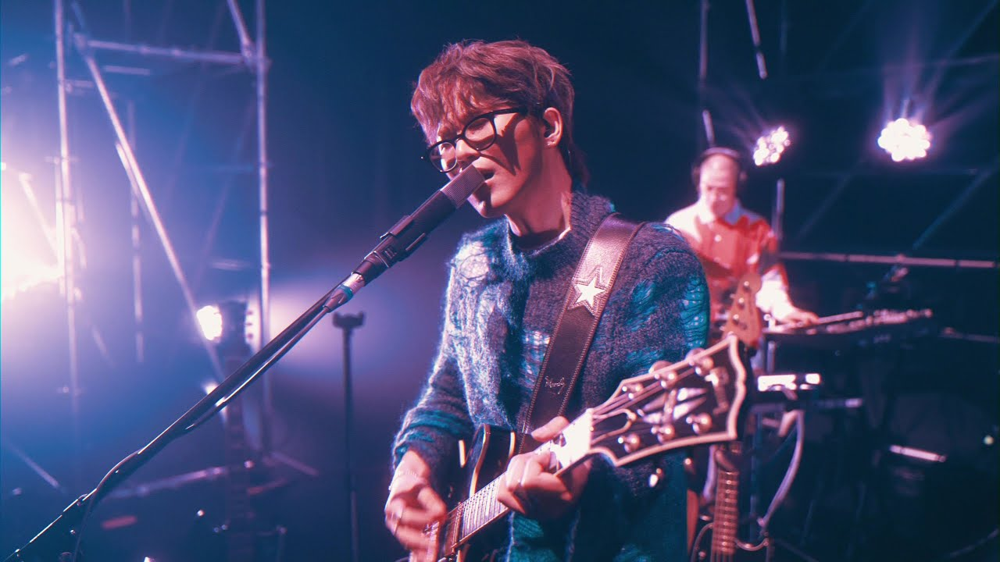
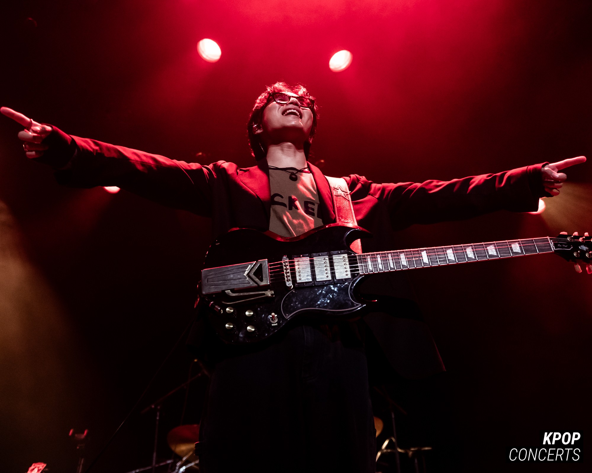
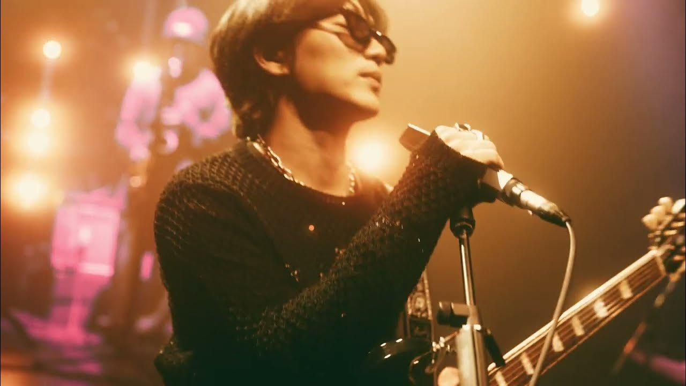
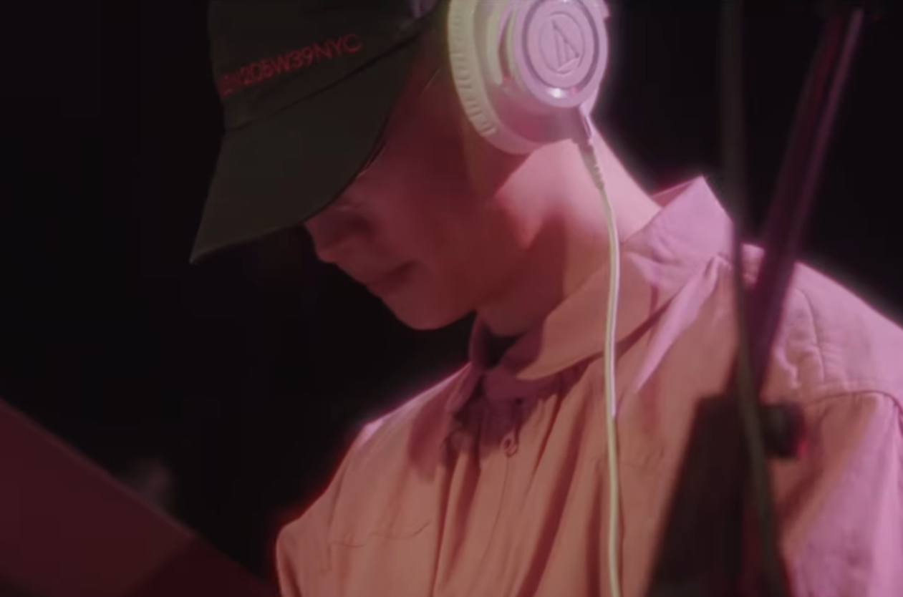
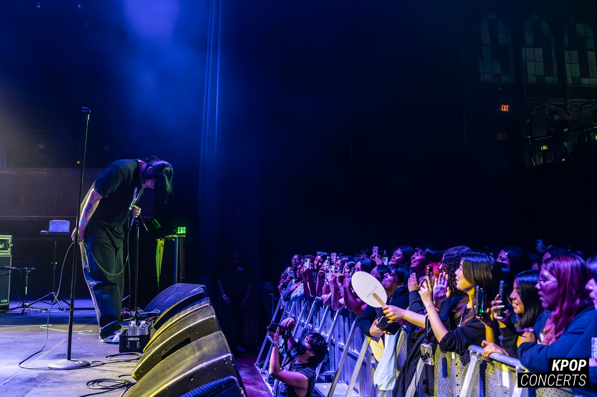
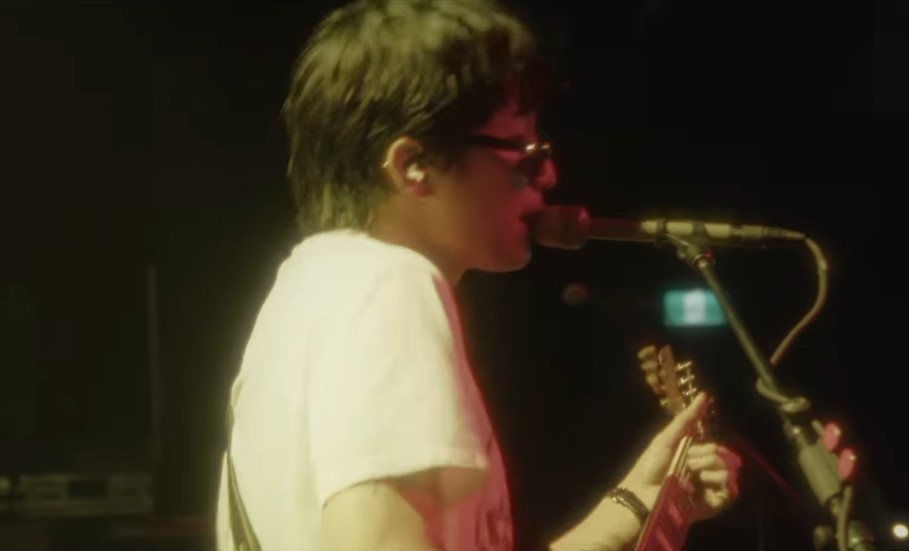
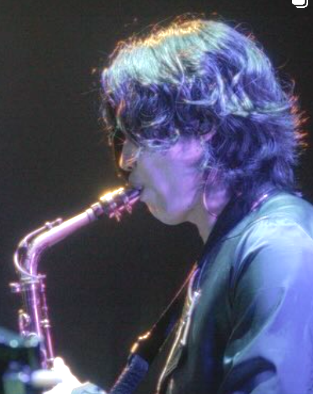
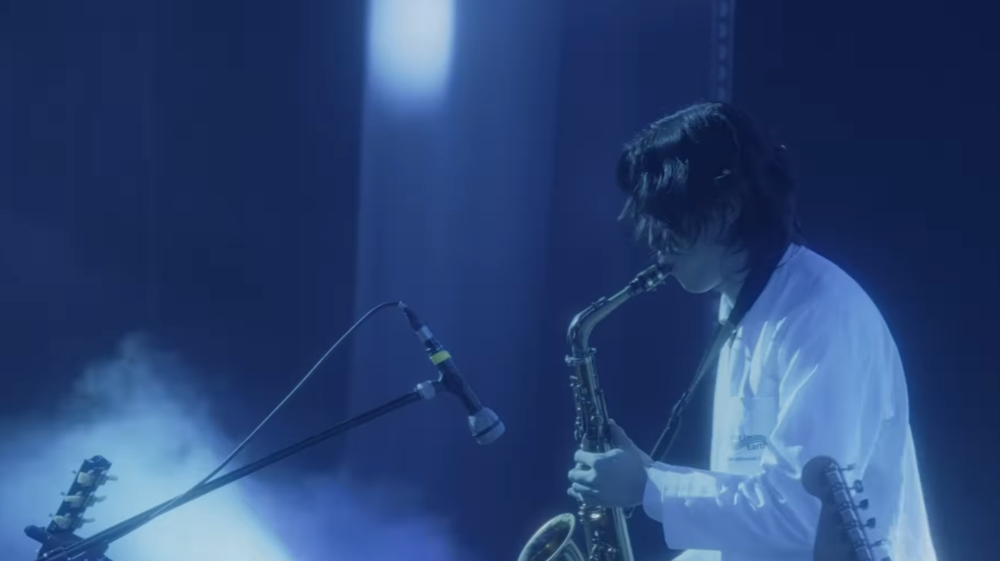
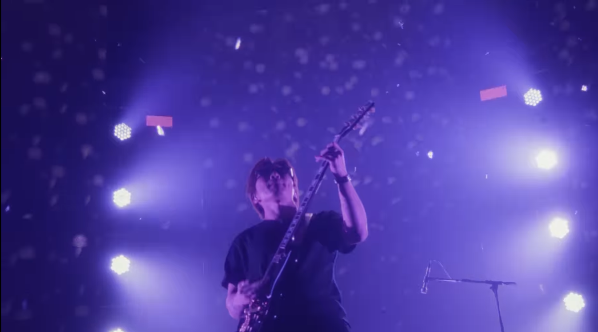

Galerie
Découvrez notre univers visuel à travers nos photos de concerts, séances et tournées.

Concert à Seoul, 2023

Tournée Europe, 2024

Session studio pour 0.1 Flaws and All

Festival d'été, Tokyo

En tournée, USA 2023

Enregistrement voix, Seoul

Concert acoustique, Paris

Backstage, Londres

Séance photo promo
Notre voyage en images
Depuis nos débuts en 2019, nous avons parcouru un chemin riche en expériences et en rencontres. Cette galerie rassemble des moments précieux de notre parcours musical, capturés lors de concerts, de sessions d'enregistrement et de nos tournées à travers le monde.
Nous tenons à remercier tous les photographes talentueux qui ont su immortaliser ces instants uniques, ainsi que nos fans qui nous soutiennent à chaque étape de notre aventure.
Cliquez sur les images pour les agrandir et utilisez les filtres pour explorer différentes catégories de photos.